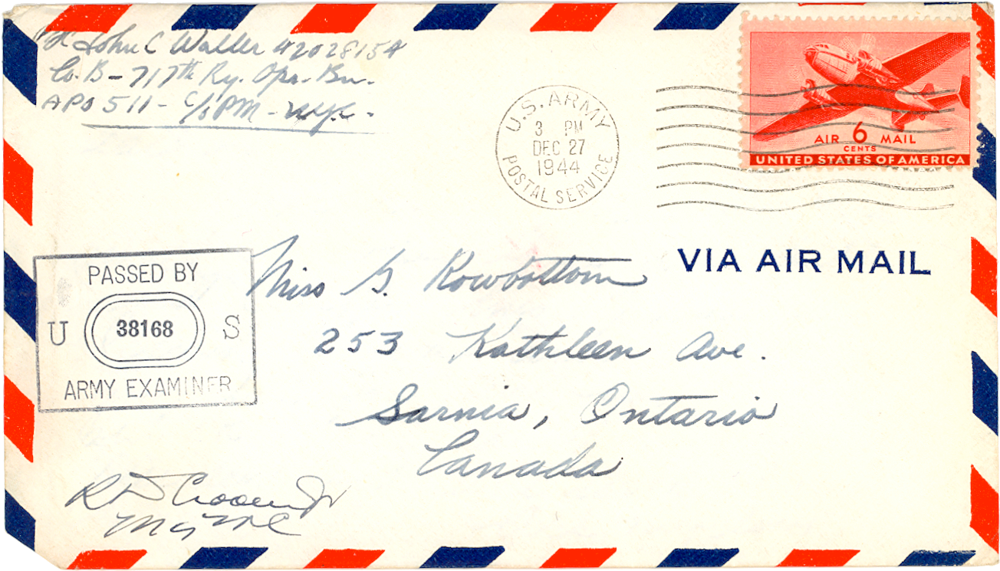

About the Project
- This project was designed by Spencer Roberts during the winter semester of 2013 in accordance with the requirements of HIST 697: Creating History in New Media.
- The content of this site was generously donated by Lisa Daamen, who found the original letters from John Waller in her attic. Mr. John C. Waller provided his permission to use the letters and images in an appropriate manner.
 This work is licensed under a Creative Commons Attribution-NonCommercial-ShareAlike 3.0 Unported License.
This work is licensed under a Creative Commons Attribution-NonCommercial-ShareAlike 3.0 Unported License.- This site conforms to HTML5 and CSS3.0 standards.
- Please enjoy the site and feel free to send comments to spencer[at]swroberts.ca
Design and Colour Palette
The design and colours used on this site were based on a standard V-Mail form used by soldiers to communicate with friends and family back home. The palette is augmented with variations on the standard colours found on air mail envelopes.
